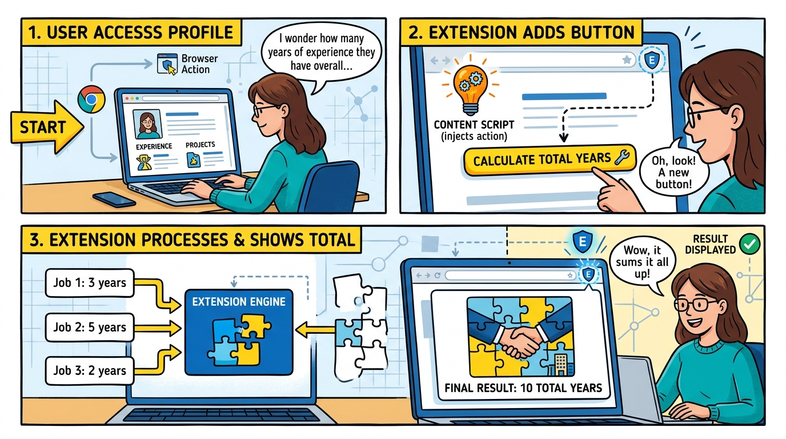
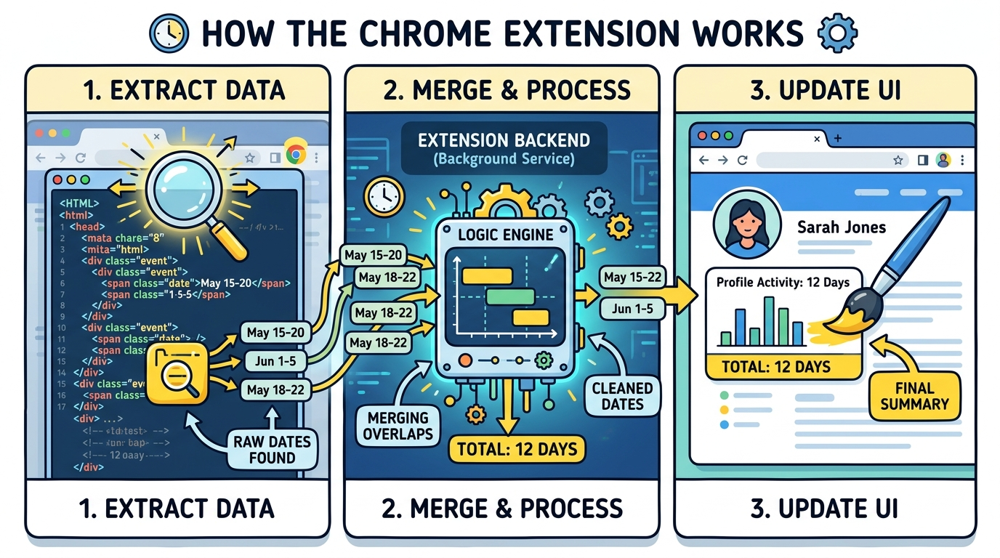

Instantly calculate the total cumulative work experience and career start date for any LinkedIn profile, with smart overlapping-role deduplication.
Add to Chrome1. You visit a profile: You open a LinkedIn profile normally. The extension quietly notices you're there.
2. The button appears: A shiny new "Calculate" button is seamlessly injected into the page.
3. The Magic Happens: When you click it, the extension reads the dates, merges any overlapping jobs (so you don't over-count), and shows you the true total!

Curious about what happens internally the millisecond you click that button? Here is the exact internal data flow:
1. DOM Fetcher: The extension silently sends a background request to fetch the user's hidden Experience HTML.
2. Regex Parser: A hyper-optimized Regular Expression scans the raw HTML to extract every single date range (e.g. "Jan 2020 - Present").
3. Interval Engine: The engine converts all those dates into mathematical blocks. It sorts them chronologically and merges any overlapping pieces together!
4. User Interface: The final, perfectly deduplicated total is injected back into your active LinkedIn window.

We respect your privacy. View our Support & Privacy Policy for more details.